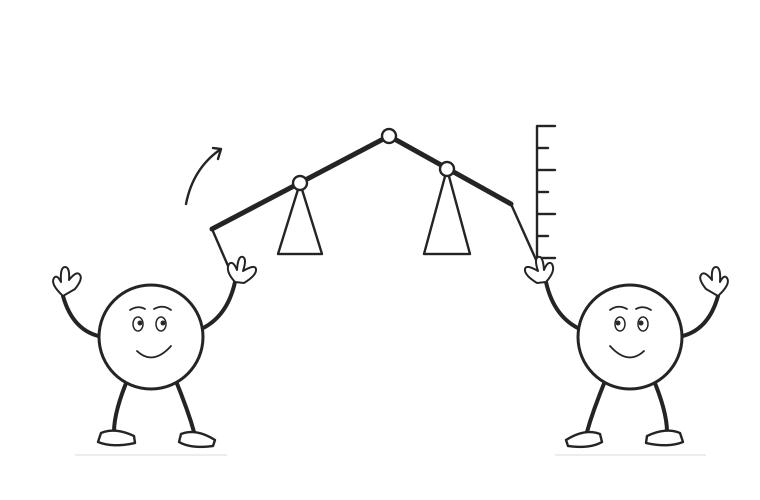

03 / Causal machine learning
DML for instrumental variables
A different source of treatment variation.
Build an orthogonal IV score, separate nuisance learning from identification, and see what happens when an instrument is weak or invalid.
Scroll to begin
Begin with an endogenous treatment. Introduce an instrument, remove three conditional means, and build the IV score. A separate binary-instrument example closes with LATE.
Learn the nuisance functions.
Defend the instrument.
DML combines an orthogonal IV score with out-of-fold nuisance predictions. Its statistical protection concerns nuisance estimation error. The exclusion restriction, instrument exogeneity, relevance, and causal target still require a substantive argument.
Read the complete explanation, calculations, and assumptions ↗
Sources and further reading
- Chernozhukov et al. (2018). Double/debiased machine learning for treatment and structural parameters, Sections 4.2 and 5.2.
- DoubleML. Partially linear IV and interactive IV score definitions.
The main example is a 24-point factorial construction with coefficient 2 and known conditional means. Every combination of three covariate values and two values each of instrument variation, an unobserved cause, and outcome noise appears once. The weak-instrument scene is a moment-sensitivity calculation. A separate ten-type population illustrates binary IV and LATE. Cross-fitting shows data flow, not browser-trained models.